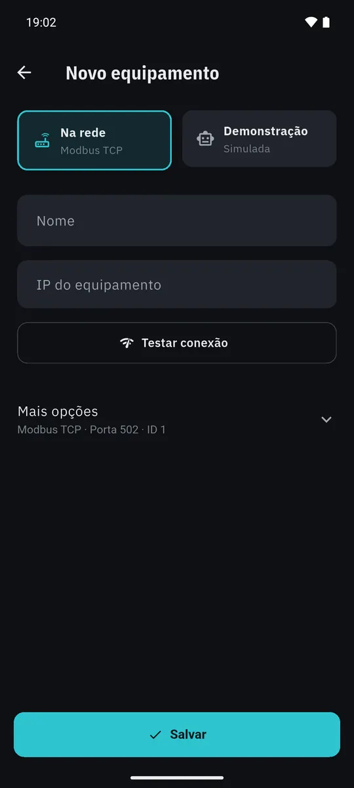
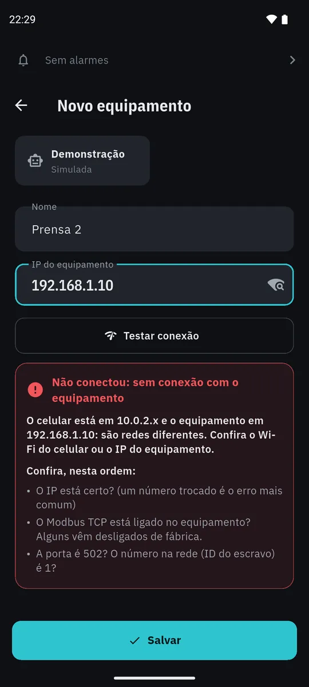

Tutorial 1
Cadastrar um equipamento
- Abra a aba Equipamentos e toque em Novo equipamento.
- Deixe Na rede marcado. Dê um nome, como Prensa 2, e digite o IP do equipamento.
- Toque em Testar conexão.
- Respondeu? Toque em Salvar. Não respondeu? O app diz o que conferir, na ordem em que os problemas costumam acontecer.
Porta, ID e protocolo ficam em Mais opções. Quer só conhecer o app? Escolha Demonstração: uma máquina simulada, sem nada na rede.

